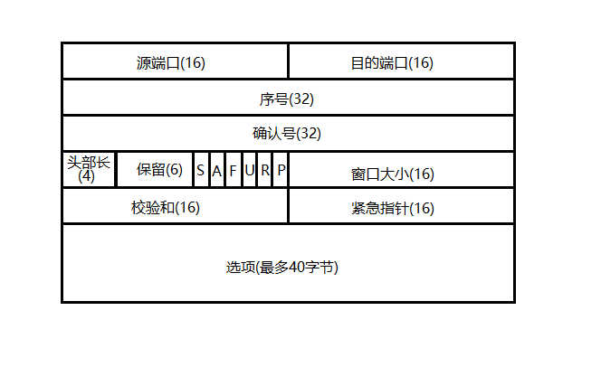

TCP协议
TCP 协议处于四层参考模型的第三层，即传输层。同一层的还有 UDP 协议。TCP 和 UDP 的区别是：TCP 是可靠的，面向连接的，基于字节流的服务；UDP 是不可靠的，无连接的，面向数据块的服务。
解释如下：
- 每次使用 TCP 传输数据时，都要先建立一对一的连接，即面向连接的。而使用 UDP 时不必先建立连接，而是直接将数据广播出去就可以，即无连接；
- 因为 TCP 必须先建立连接，所以 TCP 传输的速度要比 UDP 慢；
- TCP 使用一系列机制来保证数据的可靠传输，包括数据确认机制，超时重传机制等。
- 发送 TCP 数据时，应用层需将数据写入到 OS 提供的 buffer 里面，操作系统将其看作一连串的，没有边界的数据流，通过相对序号进行定位；而发送 UDP 数据时，应用层交给 OS 多大的数据包，操作系统就直接发送出去。根本不考虑效率，如果数据太大，可能会在 IP 层进行分片，如果数据太小，则每个数据包的有效载荷会比较低，浪费带宽；
TCP 报头的格式

图中各字段含义解释如下：
- 源端口和目的端口：指明该 TCP 报文是由哪一个应用程序发送给哪一个应用程序的。因为端口号标示这应用层的一个服务进程。
- 序号和确认号：序号表明该报文段在整个数据流中相对于开始位置的偏移量；确认号表明该报文是对对端的哪一个报文的确认，特别声明的是，只有当 ACK 标志为 1 时，确认号才有效。TCP 的数据确认机制就是通过这两个字段来实现的。
- 头部长度：表明该 TCP 报头的长度，包括选项部分。
- 保留字段：保留不用，以便于将来扩展。
- 标志字段：共 6 位，含义分别为:
- S –> SYN，若为 1，表明这是一个请求报文；
- A –> ACK，若为 1，表明确认号有效，这是一个确认报文；
- F –> FIN，若为 1，表明这是一个断开连接的请求报文；
- U –> URG，若为 1，表明紧急指针有效；
- R –> RST，若为 1，表明这是一个复位报文段，接收端会清空自己的发送缓冲区；
- P –> PSH，若为 1，提示接收端应用程序应立即从缓冲区中读走数据；
- 窗口大小：告诉对端自己的缓冲区大小，用于 TCP 的滑动窗口机制。
- 校验和：由发送端对 TCP 头部和数据部分进行 CRC 循环冗余校验后填充，接收端以此确定该数据报是否损坏。
- 紧急指针：若 URG 标志为 1，则紧急指针有效，指明 TCP 带外数据的相对位置。
- 选项字段：记录一些其他的信息，在此不表。
TCP 连接的建立
TCP 通过建立一条全双工的通信链路来保证数据的可靠传输。建立连接的过程即为三次握手和四次挥手。
TCP 通信的两端都处于某些状态之中，通过在各种不同状态间的切换来完成数据传输。
示意图如下：

图中绿色大写部分标注出来的是 TCP 的状态转移过程，橙色小写部分标注出来的是客户端和服务器各自所调用的函数。
-
服务器和客户端首先调用 socket 函数创建一个 socket，此时它们都处于 CLOSED 状态；
-
服务器调用 bind 函数绑定端口号，并调用 listen 函数监听该 socket ，进入 LISTEN 状态；
-
服务器调用 accept 函数等待客户端的连接；
-
客户端调用 connect 函数，在此函数中发生了三次握手操作，此后客户端处于 ESTABLISHED 状态；服务器则从 accept 函数返回，也处于 ESTABLISHED 状态。三次握手如下：
- 客户端发送携带 SYN 标志的请求报文给服务器，随机初始值 ISN 为 x。进入 SYN_SENT 状态;
- 服务器收到请求报文后，回复给客户端一个确认报文，表示自己同意建立连接，ACK 表示对 x 的确认。同时也会发送自己的 SYN 请求随机初始值为y。
- 客户端收到服务器的报文后，知道服务器同意与自己建立连接。同时也回复了服务器，表示『我也同意与你建立连接』，ACK 表示对 y 的确认。
-
接下来服务器与客户端各自传输数据；
-
当客户端的数据发送完毕后，会调用 close 函数来断开连接(当然也可以有服务器来断开连接，不过道理是一样的)。在 close 函数里，发生了两次挥手操作。
- 客户端发送 FIN 报文给服务器，表示『我的数据已经发送完了，现在请求断开连接』，此时进入 FIN_WAIT_1 状态；
- 服务器收到后，回复了一个确认报文，表示同意断开。ack 为对上次 x+1 的确认。此时服务器进入 CLOSE_WAIT 状态；
- 客户端收到后，进入 FIN_WAIT_2 状态；
-
当服务器的数据也发送完毕时，也调用 close 函数请求断开连接，在 close 函数发生了另两次挥手操作。
- 服务器发送 FIN 报文给客户端，表示『我的数据也发送完了，现在请求断开连接』，并进入 LASK_ACK 状态；
- 客户端收到后，发送确认报文，表示『我也同意断开你的连接』。并进入 TIME_WAIT 状态。TIME_WAIT 状态共持续 2MSL 时间。注：MSL，Max Segment Life，即最大报文生存期。表示一个报文可以存活的最大时间。RFC标准文档建议值为 2 分钟，Linux 下一般为 30 秒；
- 服务器收到该确认报文后，连接正式关闭，回到 CLOSED 状态；
- 客户端在 TIME_WAIT 状态持续 2MSL 时间后，也回到 CLOSED 状态。一个完整的 TCP 过程完成。
TIME_WAIT 状态
TIME_WAIT 状态存在的原因有两个：
- 保证 TCP 连接安全可靠地断开；
- 允许老的重复分节在网络上消逝；
如果没有 TIME_WAIT 状态，那么当客户端发送的最后一个确认报文在网络上丢失时，对客户端而言连接已经完全断开，没有任何问题。但对服务器来说，并没有收到确认报文，所以在超时之后会再次发送 FIN 报文给客户端，而此时客户端会认为这是一个非法的报文，会回复一个带 RST 标志的报文，所以就产生了『僵死连接』。所以主动断开连接的一方需要维护一个 TIME_WAIT 定时器，在定时器到期之前，如果再次收到了服务器的 FIN 包，表明自己的最后一个确认报文已经丢失，此时会再次发送确认报文并重置该定时器。
另一种情况，如果客户端的最后一个确认报文并没有丢失，而是阻塞在某个路由器节点上了。此时若没有 TIME_WAIT 状态，那么服务器和客户端均可以完全关闭连接，然后重新建立一个相似的 TCP 连接，在此之后，刚才那个确认报文到达了服务器，也会导致服务器认为是非法的，但服务器还维持着原来的 TCP 连接。
TCP 的四个定时器
TCP 协议为每个 TCP 连接规定了四个定时器，分别是重传定时器，持久定时器，保活定时器和时间等待定时器。
重传定时器
用于数据应答机制中。当一端发送出一个数据包时，就启动一个重传定时器。当定时器超时时，就重发该报文并重置该定时器。这是 TCP 可靠性的基础。
持久定时器
设想这么一种情况，发送端哗哗哗地发送数据，将接收端的接收窗口占满了，此时会收到一个宣布接收窗口大小为 0 的确认报文，此时发送端就会启动一个持久定时器，若在定时器未到期期间收到了宣布接收窗口有空闲的报文，就撤销该持久定时器，继续发送数据。否则在定时器到期后，就发送一个探测报文，告诉接收端『你的窗口有空闲了没？快点告诉我！』。
若没有持久定时器，可能接收端想通知发送端自己的接收窗口有空闲可以继续发送了，但该报文在半路丢失了，此时会发送端在等待这个已经丢失的报文，接收端在等待发送端的数据，就会造成死锁。
保活定时器
若发送端发送了某些数据后突然就沉默了，也许是出故障了，在这种情况下，这个链接将永远处于打开状态下。
解决方法就是当接收端没接受到一个报文，就重置保活定时器。当保活定时器到期后，也就是超过了规定的阈值，发送端会发送探测报文。若发了若干个探测报文还是没有收到响应的话，就认为对端出现了故障，就关闭连接。
时间等待定时器
刚才说了，时间等待定时器的作用是为 TIME_WAIT 状态计时。
TCP 超时重传机制
TCP 的超时重传机制就是发送端发出一个数据包后，立即启动一个重传定时器。若在定时器到期之前收到了确认报文，就撤销该定时器并继续发送数据。否则就认为该数据包在传输途中丢失，重发该数据包并重置定时器。因此这样保证了数据包一定能被对方收到，也就是 TCP 的可靠性之一。
【完】